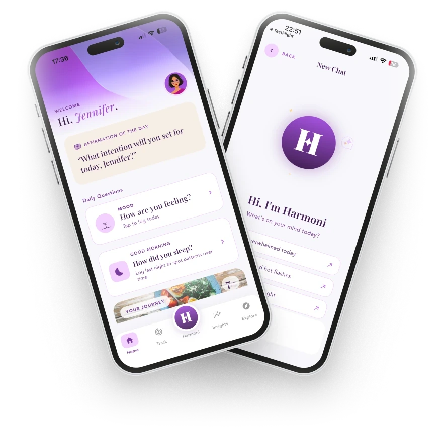
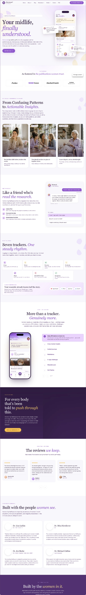

EVIDENCE
Assumption disproved
Data showed onboarding was not the problem, saving the team from redesigning the part that already worked.
Harmoni® by thePause® · Product Design Case Study
Reimagining menopause support as a personalised, emotionally intelligent health companion.

Scope: product discovery, UX research, product strategy, information architecture, UX/UI design, prototyping, user testing, design system, product iteration, product analytics and website rebrand.
Partner
thePause Technologies Inc. is a wellness start-up helping women navigate midlife hormonal change with confidence. Its founding vision — healthy habits and active lifestyles — is backed by a clinician advisory board and grounded in established clinical sources such as NAMS, NIH and the SWAN Study.
The first version proved the concept: an AI assistant, daily check-ins, activity levels and menopause-stage assessments. My task was to lead its next iteration.
The situation — why a second iteration
Version 1 was built for women in menopause. Research kept pointing to a much larger group just outside the door: women in perimenopause, who still have periods.
Most of what people call “menopause symptoms” — hot flashes, broken sleep, mood shifts, brain fog — begin years before the final period. By speaking only to postmenopausal users, the product was missing the moment women first search for help.
PROCESS & CONTRIBUTION
From research and a new identity to a funnel diagnosis that replaced assumptions with evidence.
1. Discovery
We began by reviewing the existing product, user journeys, available feedback, business goals and the competitive landscape across menopause, cycle-tracking, mental-wellness and health-coaching products.
DISCOVERY ACTIVITIES
What women told us
2. Brand & design system
The rebrand reflects the product’s evolution from a functional health tracker into a trusted everyday companion: confident colour, soft gradients, organic forms, inclusive imagery and calm interface patterns — modern and optimistic without feeling clinical or stereotypically feminine.
Content style became part of the system. Microcopy was rewritten to be clear, respectful and supportive: instead of only reporting a problem, the product acknowledges her experience and helps her decide what to do next.
The identity was applied across the mobile and tablet apps, marketing website, educational content, onboarding, reports and subscription journeys.
THE SYSTEM COVERED
3. Design solutions
The redesigned experience brings together multiple aspects of women’s midlife health instead of treating symptoms as isolated events.
Onboarding collects only what is needed to create immediate relevance: hormonal and menstrual stage, current symptoms, goals, lifestyle preferences, period status and where she wants the most support. Harmoni personalises the dashboard, content, challenges, tracking options and AI guidance from day one.
Many women enter perimenopause while still having regular or irregular periods. Period dates and flow sit alongside symptoms, sleep, stress, mood and energy, revealing possible relationships between cycle changes and wellbeing — so women no longer need to wait until their periods stop to feel the product is for them.
Daily tracking was redesigned to reduce cognitive load. Clear scales, familiar interactions and supportive microcopy make check-ins feel manageable rather than medical.
The AI was positioned as a supportive guide rather than a generic chatbot. Harmoni uses context from the product — symptoms, goals, logged experiences and patterns — to give relevant explanations, questions and next steps.
It helps her interpret what she is experiencing, explains complex topics in plain language, suggests relevant tracking or content, encourages self-advocacy, and is clear about the limits of AI guidance — including when to speak to a GP.
Tracked data becomes valuable only when she can understand it. Insights focus on patterns, correlations and change over time rather than disconnected charts. Monthly summaries connect symptoms, sleep, mood, activity and habits, and reports support more informed conversations with healthcare professionals.
Personalised journeys turn broad goals — better sleep, lower stress, steadier mood, more movement — into achievable daily actions, with structure but without pressure.
Meditations, educational content, progress indicators and badges were integrated into the main journey, so she discovers them when they are most relevant.
The marketing website was redesigned alongside the app: a clear value proposition, real product screens, AI support and symptom tracking, menstrual and hormonal-stage inclusivity, expert-informed content, transparent FAQs and subscription information, and stronger paths from education to product adoption.
This aligned the external brand promise with the experience women receive after downloading the app.
The site runs on WordPress with Elementor. Many of the new sections we needed — such as the AI companion chat, tracker grids and expert cards — weren’t available as Elementor widgets, so we built them as custom HTML blocks inside the page.

Sleep can come from a wearable, from her own log, or from both — and the two rarely agree. Instead of silently picking one number, the sleep card shows both sources, says which one leads, and asks her only when the gap is big enough to matter.
The handoff gives developers everything they need to build the card without guessing:
4. Work with feedback
The product evolved through repeated cycles of designing, prototyping, reviewing, testing and refining. Interactive prototypes covered onboarding, period tracking, symptom logging, insights, AI conversations, reports, challenges and subscription flows.
Feedback from target users, stakeholders, women’s-health experts and developers was grouped into themes and prioritised by user impact, business value and implementation effort — then turned into product changes, reviewed and tested again.
FEEDBACK INFORMED
5. Funnel diagnosis
The product had too few paying users, and the team’s response was to plan more features. Without data, every new feature was a guess about a problem nobody had located.
6. Trust-led redesign
Registration asked for an email code before a woman had seen a privacy policy — a lot to ask from someone about to share health data. The paywall had been built outside the design process and listed features rather than the value of her plan.
I redesigned the path from the first promise to renewal on the existing purple and lilac glass design system, without introducing new visual patterns.
Onboarding now tells her what she will learn about herself before asking anything clinical, and hands that result over before any mention of price. The paywall becomes the conclusion of her story, not a cold ask.
REDESIGN CHANGES
Next: measure
I presented the findings to the founders as a ship, test and instrument plan, together with a competitive review of pricing and value propositions across six menopause and women’s health apps.
The analysis also mapped what the team could not yet see — store impressions and downloads, sandbox purchases mixed into subscription events — and defined the access and tracking needed to close those gaps.
The sign-up fixes are live and measured: drop-off at registration nearly halved. The freemium model and the paywall framings are the next things to measure.
SHIP · TEST · INSTRUMENT
DESIGN OUTCOME
The rebrand turned a collection of health and wellness features into a connected support system for women in perimenopause and menopause — and the funnel analysis changed what the team works on next.
EVIDENCE
Data showed onboarding was not the problem, saving the team from redesigning the part that already worked.
FOCUS
Sign-up and the paywall replaced a growing feature list as the priority.
MEASURED
A fixed social sign-in and privacy before registration — and a freemium model, so women reach the product before the price.
Earlier work: interactive prototypes for the original ThePause® app raised task accuracy and user satisfaction by 30% (2024).
Product discovery · Product analytics · Funnel analysis · Paywall & onboarding design · Design systems · Accessibility · Stakeholder alignment
NEXT PROJECT